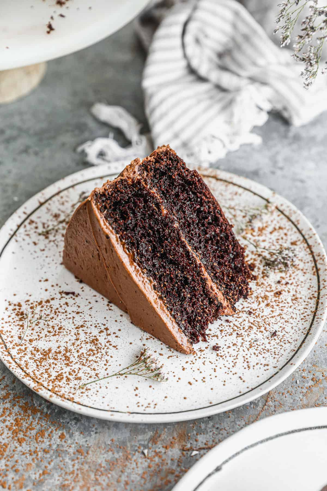

A rich super moist chocolate cake with a chocolate buttercream frosting. This is
the best cake in the world!
There's nothing like a good ol' back-of-the-box recipe. This recipe for Hershey's chocolate cake can be found on the baking aisle of any grocery store (specifically, on the label of the brand's signature unsweetened cocoa powder).
The iconic chocolate cake recipe was shared on Allrecipes more than 20 years ago, and has since earned almost 3,000 rave reviews and ratings. It's not hard to see why it's beloved by the Allrecipes community: Hershey's chocolate cake is incredibly indulgent, yet incredibly easy to make with basic ingredients. Try it today to see what all the fuss is about!
The original Hershey's chocolate cake, which was made with six candy bars, was developed post-World War II. Americans loved the recipe because it celebrated the end of food shortages and, thus, the end of the war years.
When you hear the phrase "Hershey's chocolate cake" these days, you'll likely think of Hershey's "Perfectly Chocolate" Chocolate Cake — the recipe found on the back of the brand's unsweetened cocoa powder box.
You probably already have all the ingredients you'll need to make this rich chocolate cake. If not, here's what to put on your grocery list:
Two cups of white sugar add the perfect amount of sweetness, while locking in the moisture from the other ingredients.
All-purpose flour provides structure, acts as a thickening agent, and helps build the fluffy texture.
Of course, you'll want to use Hershey's brand unsweetened cocoa powder for this one. It adds the rich, indulgent flavor you know and love.
Baking powder and baking soda act as leaveners, which means they cause the batter to expand and give the cake a perfect rise.
Just a teaspoon of salt is all you'll need to add complexity and highlight the other flavors. It might not seem like a lot, but you'll definitely miss the salt if you skip it.
Whole eggs affect the cake in a number of ways: They provide structure, add moisture, lend flavor, and contribute to a tender texture.
Whole milk adds moisture and helps the batter come together smoothly.
Vegetable oil ensures your cake will never be dry.
Two teaspoons of vanilla extract add complex flavor and bring out the flavors of the other ingredients, such as the cocoa powder.
You might be wondering why this recipe calls for a cup of boiling water. It intensifies the chocolatey flavor, contributes to the fluffy texture, and reacts with the leaveners to create an even higher rise.
So what about the frosting? Well, the frosting featured in this recipe is slightly different from the official Hersheyland's "Perfectly Chocolate Chocolate Frosting" — it calls for a bit more butter, sugar, cocoa powder, and milk.
You'll need the same ingredients for both frostings, though: Butter, unsweetened cocoa powder, confectioners' sugar, milk, and vanilla extract. You can adjust the amounts to suit your taste, of course.
You'll find the full, step-by-step recipe below — but here's a brief overview of what you can expect when you make this classic Hershey's chocolate cake.
Stir together the dry ingredients in a mixing bowl. Add the wet ingredients and beat with an electric mixer for about three minutes. Stir in the boiling water by hand.
Pour the batter into two prepared cake pans. Bake in a preheated oven until a toothpick inserted in the center comes out clean. Let the cakes cool slightly before removing from the pans.
While the cake finishes cooling to room temperature, make the frosting: Cream the butter, stir in the cocoa and confectioners' sugar alternately with the milk and vanilla, and beat until it's smooth and spreadable.
When the cake is completely cooled, top each layer with the frosting. Stack them and continue frosting until the cake is completely covered.
Since this cake is frosted with buttercream instead of a cream cheese frosting, it will last (whole and covered) at room temperature for up to five days. If you've cut the cake, it won't last quite as long — maybe four days. Cutting the cake introduces air, which contributes to drying.
If your cake becomes slightly dry before the four to five days are up, that's OK! Just use the leftovers to make Cake Balls.
Yes, you can freeze frosted or unfrosted Hershey's chocolate cake.
To freeze unfrosted cake: Wrap the cooled layers individually in one layer of plastic wrap, followed by a layer of aluminum foil (double wrapping offers extra protection from freezer burn). Freeze the layers for up to three months.
To freeze frosted cake: Place the frosted cake in the freezer, uncovered, for about three hours to allow it to freeze solid. When it's completely frozen, wrap it in a layer of plastic wrap and then a layer of aluminum foil, just like you would an unfrosted cake. Freeze for up to three months.
Thaw the frozen cake in the fridge overnight. Keep it in its wrapping to prevent sogginess.
"Super easy to make and fluffy and moist," according to jbain. "Will not buy boxed cake mix anymore. I only used 1 1/2 cups of sugar to cut down on the sweetness. I layered it in the middle with chocolate pudding then frosted the outside. I think I will use hot coffee next time to enhance the chocolate taste."
"I've made this cake a dozen times and it is perfect each time," says Jolene Marrone. "I get many compliments on it. This cake recipe also pairs nicely with peanut butter frosting, my boys' favorite birthday cake choice."
"Awesome chocolate cake," raves Crystal Caldwell. "Very moist and dense! This will be my go to chocolate cake recipe from now on!!!"
Preheat the oven to 350 degrees F (175 degrees C). Grease and flour two 9-inch round cake pans.
Make cake: Stir together sugar, flour, cocoa, baking soda, baking powder, and salt in a bowl.
Add eggs, milk, oil, and vanilla; mix for 3 minutes with an electric mixer. Stir in boiling water by hand.
Pour evenly into the prepared pans.
Bake in the preheated oven until a toothpick inserted into the centers comes out clean, 30 to 35 minutes. Cool for 10 minutes before removing from pans to cool completely.
While cakes cool, make frosting: Cream butter with an electric mixer until light and fluffy. Stir in confectioners' sugar and cocoa alternately with milk and vanilla. Beat to a smooth spreading consistency.
Split the layers of the cooled cake horizontally, cover the top of each layer with frosting, then stack them onto a serving plate.
Frost the outside of the cake with remaining frosting.
Enjoy!